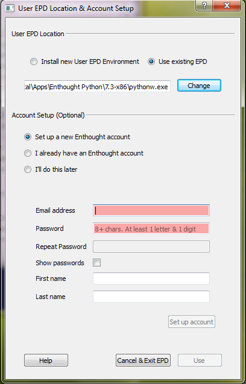

The second step in installing EPD 8 is to set up the “user Python environment,” where all your Python code will run. This is a standard Python installation from the Enthought Python Distribution, to which you can also add additional Python packages. (We call it the “user Python environment” to distinguish it from the Python used internally by the GUI- these are separate so that changes to the GUI’s Python and changes to your user Python environment will not conflict with each other. For more details, see “What is the difference between the GUI and User Python Environment?”.)
When you first launch the EPD 8 GUI, you will see a configuration dialog that allows you to configure the user Python environment and (optionally) set up or specify an Enthought.com account:
The upper portion of the dialog window provides the option either to install the user Python environment or to use an existing EPD installation.
Users with an existing EPD installation can choose to use that environment, provided that it is version 7.0 or higher and has the same architecture (32- or 64-bit) as your EPD 8 GUI. Using an existing installation can be convenient if you have customized it with additional Python packages. No changes are made to existing installations. You may update any packages in this installation using the EPD 8 Package Manager or the enpkg command line tool.
IMPORTANT: In this early beta release, if you choose to use an existing EPD installation as your User Python Environment, please perform the following manual step from a terminal window before you use the EPD GUI’s Package Manager features. (You can do this either before or after installing EPD 8.0 GUI):
enpkg --userpass
enpkg enstaller
This is a safe operation. The only installed package that this will affect will be Enthought’s enstaller package, which manages EPD’s package update mechanism.
Note: Users with existing EPD installs, particularly those users running on Mac OSX, should read this release note: Package Manager fails with write error on existing EPD environment.
Selecting Install new User EPD Environment will install a new Enthought Python environment. The default installation directory for the user Python environment varies with platform and is changeable to any writable location. The default install location for each platform is given in the table below:
| Windows Version | Per-user Install Path |
|---|---|
| Windows (admin rights, any version) | C:\Python27 |
| Windows XP & Vista | C:\Documents and Settings\<username>\LocalSettings\Apps\Enthought Python\EPDVer |
| Windows 7 | C:\Users\<username>\AppData\Apps\Enthought Python\EPDVer |
| Mac OSX | ~/Library/EPD/EPDVer |
| Linux | ~/EPD/EPDVer |
In the above table, EPDVer refers to a directory named for the specific version of the user EPD environment being installed. For this release, the versions are 7.3-x86 (32-bit) and 7.3-x86_64 (64-bit).
The lower portion of the configuration dialog shown above allows you to optionally provide login information for your Enthought.com account. Accounts are free to all users and provide access to updates of Python packages via the EPD 8 Package Manager and the enpkg command line tool. If you are already an EPD subscriber, you can select “I already have an Enthought account” and enter your username or email, and your password. If you select “I’ll do this later”, you can enter these later via the Preferences dialog.